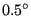
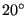

Next: Three-node membrane element (M3D3) Up: Element Types Previous: Six-node shell element (S6) Contents
This element is a general purpose 4-sided shell element. The node numbering and the direction of the normal to the surface is shown in Figure 68.
In CalculiX, quadratic shell elements are automatically expanded into 20-node brick elements. The way this is done is illustrated in Figure 69. For each shell node three new nodes are generated according to the scheme on the right of Figure 69. With these nodes a new 20-node brick element is generated: for a S8 element a C3D20 element, for a S8R element a C3D20R element.
Since a shell element can be curved, the normal to the shell surface is defined in each node separately. For this purpose the *NORMAL keyword card can be used. If no normal is defined by the user, it will be calculated automatically by CalculiX based on the local geometry.
If a node belongs to more than one shell element, all, some or none of the normals on these elements in the node at stake might have been defined by the user (by means of *NORMAL). The failing normals are determined based on the local geometry (notice, however, that for significantly distorted elements it may not be possible to determine the normal; this particularly applies to elements in which the middle nodes are way off the middle position). The number of normals is subsequently reduced using the following procedure. First, the element with the lowest element number with an explicitly defined normal in this set, if any, is taken and used as reference. Its normal is defined as reference normal and the element is stored in a new subset. All other elements of the same type in the set for which the normal has an angle smaller than  with the reference normal and which have the same local thickness and offset are also included in this subset. The elements in the subset are considered to have the same normal, which is defined as the normed mean of all normals in the subset. This procedure is repeated for the elements in the set minus the subset until no elements are left with an explicitly defined normal. Now, the element with the lowest element number of all elements left in the set is used as reference. Its normal is defined as reference normal and the element is stored in a new subset. All other elements left in the set for which the normal has an angle smaller than  with the reference normal and which have the same local thickness and offset are also included in this subset. The normed mean of all normals in the subset is assigned as new normal to all elements in the subset. This procedure is repeated for the elements left until a normal has been defined in each element.
This procedure leads to one or more normals in one and the same node. If only one normal is defined, this node is expanded once into a set of three new nodes and the resulting three-dimensional expansion is continuous in the node. If more than one normal is defined, the node is expanded as many times as there are normals in the node. To assure that the resulting 3D elements are connected, the newly generated nodes are considered as a knot. A knot is a rigid body which is allowed to expand uniformly. This implies that a knot is characterized by seven degrees of freedom: three translations, three rotations and a uniform expansion. Graphically, the shell elements partially overlap (Figure 70).
Consequently, a node leads to a knot if
In CalculiX versions prior to and including version 2.7 a knot was also introduced as soon as the user applied a rotation or a moment to a node. Right now, this is still the case for dynamic calculations (cf. listing above). However, in static calculations, starting with version 2.8 this type of loading is handled by using mean rotation MPC's (cf. Section 8.7.1). The mean rotation MPC's are generated automatically, so the user does not have to take care of that. It generally leads to slightly better results then by use of knots. However, the use of mean rotation MPC's prohibits the application of drilling moments, i.e. moments about an axis perpendicular to a shell surface. Similarly, no drilling rotation should be prescribed, unless all rotational degrees of freedom are set to zero in the node. If the shell surface is not aligned along the global coordinate directions, prescribing a moment or rotation aboun an axis perpendicular to the drilling direction may require the definition of a local coordinate system. Also note that the rotation in a mean rotation MPC should not exceed 90 degrees. Starting with version 2.15 any nonzero drilling moment or rotation is automatically removed and a warning is issued. In earlier versions, a drilling moment or rotation led to an error, forcing the program to abort.
Beam and shell elements are always connected in a stiff way if they share common nodes. This, however, does not apply to plane stress, plane strain and axisymmetric elements. Although any mixture of 1D and 2D elements generates a knot, the knot is modeled as a hinge for any plane stress, plane strain or axisymmetric elements involved in the knot. This is necessary to account for the special nature of these elements (the displacement normal to the symmetry plane and normal to the radial planes is zero for plane elements and axisymmetric elements, respectively).
The translational node of the knot (cfr REF NODE in the *RIGID BODY keyword card) is the knot generating node, the rotational node is extra generated.
The thickness of the shell element can be defined on the *SHELL SECTION keyword card. It applies to the complete element. Alternatively, a nodal thickness in each node separately can be defined using *NODAL THICKNESS. In that way, a shell with variable thickness can be modeled. Thicknesses defined by a *NODAL THICKNESS card take precedence over thicknesses defined by a *SHELL SECTION card. The thickness always applies in normal direction. The *SHELL SECTION card is also used to assign a material to the shell elements and is therefore indispensable.
The offset of a shell element can be set on the *SHELL SECTION card. Default is zero. The unit of the offset is the local shell thickness. An offset of 0.5 means that the user-defined shell reference surface is in reality the top surface of the expanded element. The offset can take any real value. Consequently, it can be used to define composite materials. Defining three different shell elements using exactly the same nodes but with offsets -1, 0 and 1 (assuming the thickness is the same) leads to a three-layer composite.
However, due to the introduction of a knot in every node of such a composite, the deformation is usually too stiff. Therefore, a different method has been coded to treat composites. Right now, it can only be used for 8-node shells with reduced integration (S8R) and 6-node shell elements (S6). Instead of defining as many shells as there are layers the user only defines one shell element, and uses the option COMPOSITE on the *SHELL SECTION card. Underneath the latter card the user can define as many layers as needed. Internally, the shell element is expanded into only one 3-D brick element but the number of integration points across the thickness amounts to twice the number of layers. During the calculation the integration points are assigned the material properties appropriate for the layer they belong to. In the .dat file the user will find the displacements of the global 3-D element and the stresses in all integration points (provided the user has requested the corresponding output using the *NODE PRINT and *EL PRINT card). In the .frd file, however, each layer is expanded independently and the displacements and stresses are interpolated/extrapolated accordingly (no matter whether the parameter OUTPUT=3D was used). The restrictions on this kind of composite element are right now:
In composite materials it is frequently important to be able to define a local element coordinate system. Indeed, composites usually consist of layers of anisotropic materials (e.g. fiber reinforced) exhibiting a different orientation in each layer. To this end the *ORIENTATION card can be used.
First of all, it is of uttermost importance to realize that a shell element ALWAYS induces the creation of a local element coordinate system, no matter whether an orientation card was defined or not. If no orientation applies to a specific layer of a specific shell element then a local shell coordinate system is generated consisting of:
Notice that this also applies in shell which are not defined as composites (can be considered as one-layer composites).
If an orientation is applied to a specific layer of a specific shell element then a local shell coordinate system is generated consisting of:
The treatment of the boundary conditions for shell elements is straightforward. The user can independently fix any translational degree of freedom (DOF 1 through 3) or any rotational DOF (DOF 4 through 6). Here, DOF 4 is the rotation about the global or local x-axis, DOF 5 about the global or local y-axis and DOF 6 about the global or local z-axis. Local axes apply if the transformation (*TRANSFORM) has been defined, else the global system applies. A hinge is defined by fixing the translational degrees of freedom only. Recall that it is not allowed to constrain a rotation about the drilling axis on a shell, unless the rotations about all axes in the node are set to zero.
For an internal hinge between 1D or 2D elements the nodes must be doubled and connected with MPC's. The connection between 3D elements and all other elements (1D or 2D) is always hinged.
Point forces defined in a shell node are not modified if a knot is generated (the reference node of the rigid body is the shell node). If no knot is generated, the point load is divided among the expanded nodes according to a 1/2-1/2 ratio for a shell mid-node and a 1/6-2/3-1/6 ratio for a shell end-node. Concentrated bending moments or torques are defined as point loads (*CLOAD) acting on degree four to six in the node. Their use generates a knot in the node.
Distributed loading can be defined by the label P in the *DLOAD card. A positive value corresponds to a pressure load in normal direction.
In addition to a temperature for the reference surface of the shell, a temperature gradient in normal direction can be specified on the *TEMPERATURE card. Default is zero.
Concerning the output, nodal quantities requested by the keyword *NODE PRINT are stored in the shell nodes. They are obtained by averaging the nodal values of the expanded element. For instance, the value in local shell node 1 are obtained by averaging the nodal value of expanded nodes 1 and 5. Similar relationships apply to the other nodes, in 6-node shells:
In 8-node shells:
Element quantities, requested by *EL PRINT are stored in the integration points of the expanded elements.
Default storage for quantities requested by the *NODE FILE and *EL FILE is in the expanded nodes. This has the advantage that the true three-dimensional results can be viewed in the expanded structure, however, the nodal numbering is different from the shell nodes. By selecting OUTPUT=2D the results are stored in the original shell nodes. The same averaging procedure applies as for the *NODE PRINT command.
In thin structures two words of caution are due: the first is with respect to reduced integration. If the aspect ratio of the beams is very large (slender beams, aspect ratio of 40 or more) reduced integration will give you far better results than full integration. However, due to the small thickness hourglassing can readily occur, especially if point loads are applied. This results in displacements which are widely wrong, however, the stresses and section forces are correct. Usually also the mean displacements across the section are fine. If not, full integration combined with smaller elements might be necessary. Secondly, thin structures can easily exhibit large strains and/or rotations. Therefore, most calculations require the use of the NLGEOM parameter on the *STEP card.